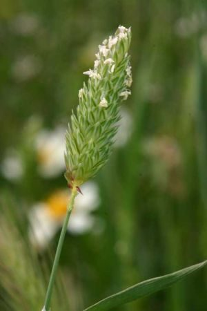

गेहूँ का मामाLittle Seed Canary Grass
Phalaris minor · Poaceae · FLR-0146

- Scientific name
- Phalaris minor Retz.
- Family
- Poaceae
- Hindi
- गेहूँ का मामा
- Local names
- gehun ka mama, gulli danda, gulidanda, mandusi, canary grass
- Status here
- invasive
- Movement
- Resident, here all year
- IUCN
- not evaluated
- Review
- audited and independently read
When to look कब देखें
Expected mainly in January, February, March, April, October, November, December.
Uses and possibilities उपयोग और संभावनाएँ
“Traditional medicine” means a documented traditional use, not a claim that it works. Nothing on this page is medical advice.
Drawn from the documented uses in the profile below, where each is labelled traditional, current or a research lead. All uses →
Tell it apart from इनसे अलग पहचानें
गेहूँ का मामा / Little Seed Canary Grass
Phalaris minor Retz. — Poaceae
गेहूँ का मामा (गुल्ली डाँडा, तिलहन, घारुन) — गेहूँ के खेतों में सबसे बड़ी समस्या बन गई है। सर्दियों में गेहूँ के साथ उगने वाली घास, जो गेहूँ के समान दिखती है पर फसल के पकने तक हरी रहती है। खेत में बिखरे हुए बीज से हर साल हज़ारों पौधे उग आते हैं। रासायनिक दवाइयों से भी पूरी तरह मारना मुश्किल है। किसानों के लिए यह घास अब महँगी समस्या बन गई है, क्योंकि खरपतवार-नियंत्रण (weed control) के लिए विशेष दवाई और समय लगते हैं।
Quick Identification त्वरित पहचान
| Feature | Description |
|---|---|
| Plant form | Annual grass, 30–60 cm tall, tufted, resembles wheat but finer |
| Leaves | Linear, flat, 5–12 mm wide, with a prominent midrib; leaf margin smooth |
| Inflorescence | Spike-like panicle (head), 3–6 cm long, compact, olive-green to brownish |
| Spikelets | Small, 5–8 mm, with three florets, outer two sterile (reduced), inner fertile |
| Seeds | Tiny, 2–3 mm, olive-brown, numerous |
| Stem | Solid, not hollow; no nodes visible outside leaf sheaths |
Field tip: A fine grass very similar to wheat in winter fields, but more delicate and remaining green longer. The spike is smaller and more compact than wheat, and the seeds are much smaller.
हिंदी — कैसे पहचानें: गेहूँ जैसी घास, पर पतली और नरम। बाली गेहूँ से छोटी, सघन। बीज छोटे, जैतून-भूरे। पूरा पौधा हरा-भरा, गेहूँ से बाद में पकता है।
Morphology आकारिकी
Biometrics (winter crop infestations, northern Indian plains):
| Measurement | Range |
|---|---|
| Plant height | 30–60 cm |
| Leaf width | 5–12 mm |
| Spike length | 3–6 cm |
| Spikelet length | 5–8 mm |
| Seed length | 2–3 mm |
Root system: Shallow, fibrous, adventitious from the lower nodes.
Stem: Fine, solid, not hollow; multiple tillers from the base.
Leaves: Linear, grass-like, with a prominent white midrib. The leaf blade is flat; the sheath is smooth and encloses the node.
Inflorescence: A dense, spike-like panicle with closely packed spikelets. The colour changes from green to olive-brown as the plant matures.
Spikelet structure: Each spikelet contains one fertile floret and two sterile florets (rudimentary scale-like structures). The lemma and palea are membranous.
Seed: Tiny, oblong, brown with a slight sheen, falling easily when ripe.
Associated Species / Interactions संबंधित प्रजातियाँ
- Host crop: Infests Wheat and barley fields.
- Associated weeds: Often found with Bathua, Indian Mustard varieties, and other winter weeds.
- Seed dispersal: Dispersed by harvesting machinery, water, and animal movement; seeds can remain dormant in soil for several years.
Life Cycle / Phenology जीवन चक्र
| Month / season | Event |
|---|---|
| October–November | Seed germinates with onset of winter rains |
| December–February | Vegetative growth; tiller development |
| February–March | Flowering; jointing (stem elongation) |
| March–April | Grain maturity; seed ripening and shed |
Seeds require dormancy-breaking (cold stratification) and germinate in autumn. Maturity is 150–180 days from sowing. Seed viability can persist in soil for 3–5 years.
हिंदी: अक्टूबर-नवंबर में अंकुरण, दिसंबर-मार्च में वृद्धि, मार्च-अप्रैल में फूल और बीज। बीज सर्दियों के लिए सोए रहते हैं।
Pests and Diseases कीट और रोग
- No specific pests or diseases; the plant is robust and hardy.
- Herbicide resistance has evolved in populations under repeated chemical control.
Agricultural / Human Relevance कृषि प्रासंगिकता
The problem:
- Crop competition: Phalaris minor is highly competitive for water, nitrogen, and light. In heavily infested wheat fields, heavy yield losses are reported in the Punjab and Haryana literature.
- Allelopathy: The plant may release compounds that inhibit the growth of wheat and other crops.
- Herbicide resistance: Decades of repeated application of the same herbicides (sulfosulfuron, isoproturon) have led to resistance. Some populations now survive recommended doses.
Control methods:
- Cultural: Crop rotation, early sowing of wheat, hand-weeding of small fields, and rotation of herbicides help suppress the weed.
- Chemical: Multiple herbicides are used (sulfosulfuron, clodinafop-propargyl), but resistance is now widespread and requires alternation.
- Mechanical: In small fields, hand-weeding is effective but labour-intensive.
Today: Phalaris minor is one of the most significant weed problems in wheat cultivation in northern India and is a focus of agricultural research.
Research direction (a lead, not a result). Studies are ongoing on herbicide resistance mechanisms, alternative control methods, and breeding for wheat varieties with allelopathic effects against phalaris.
हिंदी: गेहूँ की फसल में सबसे बड़ी समस्या। 20-50 प्रतिशत उपज कम कर देता है। रासायनिक दवाई के प्रतिरोधी हो गया है। हर साल के खेतों में मिलता है।
Expected Locally स्थानीय रूप से अपेक्षित
Not a field record. Written from published accounts for eastern Uttar Pradesh. No confirmed local sighting yet — if you have seen it, that is what the atlas needs.
अभी तक स्थानीय पुष्टि नहीं। यह विवरण प्रकाशित स्रोतों से है, किसी अवलोकन से नहीं।
Almost certainly present in wheat fields throughout Basti district. It is the most common winter weed in the region's primary Rabi crop.
Distribution वितरण
Global range: Native to the Mediterranean region and western Asia; now a widespread weed in temperate croplands worldwide.
In India: Widespread in wheat-growing areas of the north, particularly Punjab, Haryana, western UP, and increasingly Rajasthan and central India.
In Uttar Pradesh: Present in virtually all wheat-growing blocks.
In Basti district / eastern UP: Common to very common in all wheat fields.
Research Questions शोध प्रश्न
Anyone can investigate these | कोई भी इन प्रश्नों की जाँच कर सकता है
- How many phalaris seeds are shed from one plant, and how far do they disperse? — Harvest mature plants; count seeds; check for seed in stubble and on harvesting equipment.
- Does hand-weeding phalaris at the 2–3 leaf stage followed by one spray reduce yield loss more than spray alone? — Set up a small trial with different treatments; measure wheat yield.
- Which herbicide spray is most effective in your local wheat field, and does resistance exist? — Talk to local farmers; compare their spray results; work with the agricultural extension office.
- How long do phalaris seeds remain viable in soil if a field is left fallow for one year? — Collect soil samples; run germination tests.
- If wheat is sown early (October 15) instead of late (November 15), is phalaris infestation less serious? / क्या गेहूँ को जल्दी (15 अक्टूबर) बोने से गुल्ली डाँडा का प्रकोप कम होता है? — Compare early and late sowings in adjacent fields.
Similar Species मिलती-जुलती प्रजातियाँ
| Species | How to tell apart | हिंदी |
|---|---|---|
| Wheat (Triticum aestivum) | Much larger, thicker stem, larger grain; heads are looser | गेहूँ — बड़ा पौधा, मोटा तना, बड़े दाने |
| barley (Hordeum vulgare) | Larger; long parallel awns projecting outward | जौ — लंबी बालें, बाहर की ओर |
| Wild oat (Avena fatua) | Larger, with loose panicle; florets with long, bent awns | जंगली जई — पंख वाले दाने, ढीली बाली |
Field rule: A fine grass weed in winter wheat that remains green after the crop ripens, with a small, dense, olive-brown spike and tiny seeds is phalaris minor.
Taxonomy & Classification वर्गीकरण
Original description. Described by Anders Jahan Retzius in 1779 in Observationes Botanicae, Vol. 3. The epithet minor means "smaller," in reference to its size relative to other Phalaris species.
Subspecies. Monotypic — no subspecies currently recognised.
Family and order placement. Poaceae, the grass family, in the order Poales. The genus Phalaris holds about 20 species, mostly from temperate regions.
Phylogenetic notes. Phalaris minor is closely related to P. paradoxa (Littleseed canary grass) and other Mediterranean species.
IUCN status rationale. Not evaluated. Invasive in its introduced range (India); widespread.
Photo Gallery फोटो गैलरी
Photos needed आवश्यक फोटो
- [ ] Whole plant in winter wheat field (पूरा पौधा)
- [ ] Spike detail showing small, dense spikelets (बाली)
- [ ] Comparison with wheat spike side-by-side (गेहूँ से तुलना)
- [ ] Mature seeds (बीज)
No photos yet — add field photos to media/species/phalaris_minor/ and run node scripts/sync_photos.js.
References संदर्भ
- Retzius, A.J. (1779). Observationes Botanicae, Vol. 3. Wikström, Stockholm. [original description]
- Indian Council of Agricultural Research (2021). Handbook of Agriculture. ICAR, New Delhi.
- Malik, R.K., Singh, S. & Yadav, A. (2010). Herbicide resistance in Phalaris minor Retz. in India. Pest Management in Rice-Wheat Cropping System 2: 45–62.
- Chauhan, B.S., Singh, R.P. & Lodha, S. (2008). Herbicide resistance in Phalaris minor populations in north-west India. Weed Science 56(3): 371–376.
- Botanical Survey of India. State Flora Series: Flora of Uttar Pradesh. BSI, Kolkata.
- GBIF Occurrence Data — Phalaris minor, India (2026).
Source file: species/flora/crops_associated/phalaris_minor.md